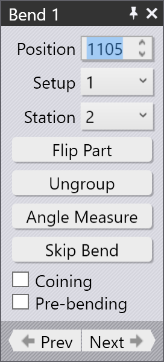
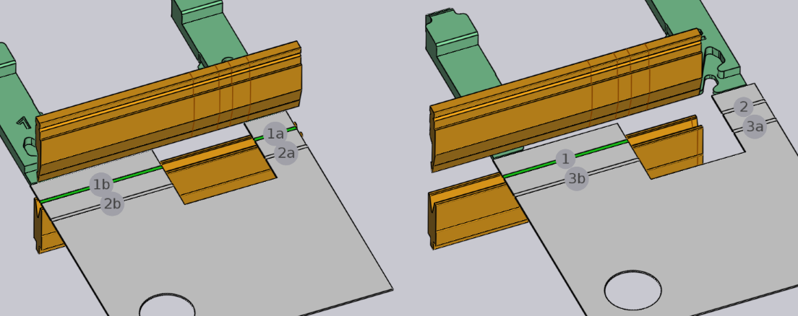
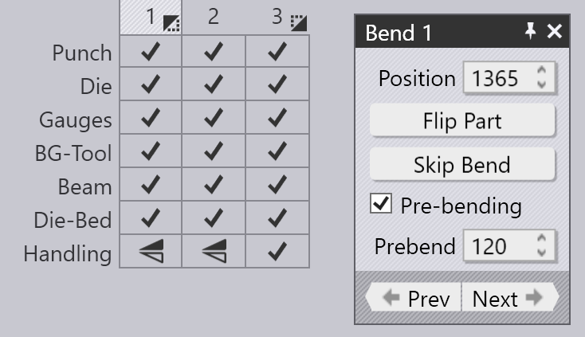
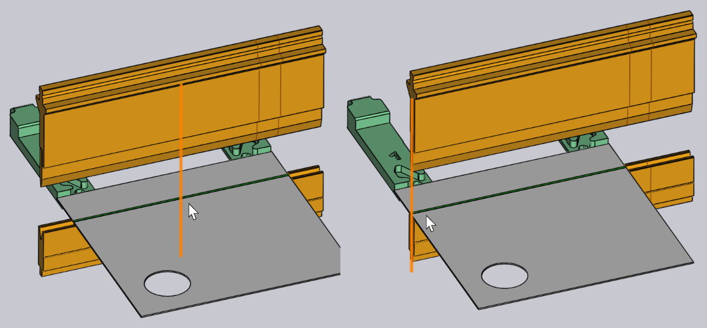
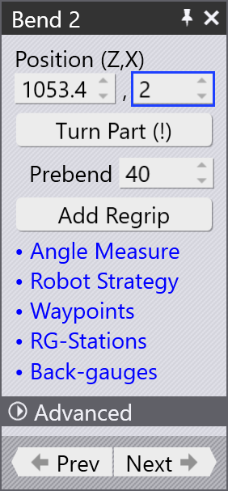
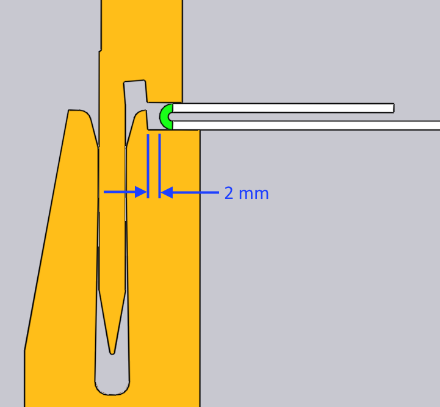

曲げ加工の編集
曲げ加工パネルで、曲げ加工の基本設定を表示/編集できます。特定の曲げ加工の曲 げ加工パネルの表示には:
-
ベンドナビゲーターの曲げ加工をクリックして、曲げ加工を選択します。
-
同じ曲げ加工のもう一度をクリックすると、曲げパネルが開き、その曲げ加工を編 集できます。別の方式：
-
Ctrl+曲げ加工ナビゲーターをクリックして曲げ加工を選択し、その曲げ加工の 編集パネルを開きます。
曲げ加工パネル

横の画像は曲げ加工パネルです。これには、曲げ加工作業のためのいくつかの設定とファ ンクションがあります。
-
Position 入力で、曲げ加工をマシンに沿って移動します。 ここで表示される値は、マシンのスケーリング上の曲げ加工の_左端_の位置です。(曲 げ加工をドラッグして位置をインタラクティブに設定することもできます。以下のセク ションを参照してください)。
-
および Stationリストで、この曲げプロセスを別のセットアッ プに移動します。セットアップは、マシンのパンチとダイの完全な組み合わせです； いくつかのパーツのプロセス完了には複数のセットアップが必要で、そのようなパーツに は、TecZone Bendが複数の NC プログラム (セットアップごとに 1 つ)を生成します。また は別のstation[1]このセットアップでは。これらの選択肢 は、パーツに複数のセットアップがある場合、またはセットアップに複数のステーション がある場合に限り表示されます。(加工品をクリックして別のステーションにドラッグす ると、曲げ加工を別のステーションに移動できます)。
-
Turn Partボタンで、パーツを_反転_します（反対側をマシンに挿 入）。以下の画像は、このボタンをクリックしたときの効果です (このボタンをもう一度 クリックすると、元の回転方向に戻ります)。

-
Ungroupボタンは、_複数スパン_曲げ加工（2つ以上の共線曲げス パンで構成される曲げ加工）の編集時に表示されます。グループ化された曲げをグループ 解除して個別の曲げ加工として処理_できる_場合は、このボタンでこの曲げプロセスを 2 つの個別の曲げプロセスに分割できます。以下の画像は、グループ化解除後に曲げ加工 1 (順序モードでは 1a と 1b として表示) が曲げ加工 1 と 2 に分割される様子です。

-
Angle Measure リンクを使って、この曲げ加工用の_角度測定パ ネル_を表示します。このボタンが表示されるのは、選択したマシンに使用可能な角度測 定方式がいくつもある場合に限ります。
-
Skip Bendボタンで、特定の曲げ加工を処理しないよう指示し ます。これで、一部の曲げ加工をプレスブレーキ以外のテクノロジー (たとえば、パンチ プレスやパネルベンダー) で処理することをマーキングします。[2]が可能です。
-
コイニング プロセスの使用には、Coiningチェックボックスをオンに します。これは、コイニングが可能な場合に限り有効になります (通常、コイニングに対 応できるパンチとダイがあることを意味します) コイニングにはより大きなプレス力が必 要ですが、エアベンドよりもより小さい曲げ半径を実現できます。コイニングには、この 曲げプロセスに必要な正確な角度のパンチとダイも必要です。
-
Pre-bendingオプションをオンにして、この曲げ加工を 2 つの個 別のプロセス - (予備曲げと後曲げ) - に分割します。初期設定では、TecZone Bendが 後曲げの順序を_次の_曲げ加工の直後の位置に移動します。 予備曲げの使用の詳細については、以下のセクションを参照してくださ い。[3]
-
Prev とNextボタンで、パーツのさまざまな曲げ加工 を切り替えて編集します。
上級加工工程
これは、曲げ加工の他の上級プロセスです。
予備曲げの使用
曲げプロセスを予備曲げと後曲げに分けると、いくつかのタイプの衝突を回避できます。簡単な例を次に示します。

上のパーツには2つの曲げ加工があり、2番目の曲げ加工でパーツはダイ レールと衝突し ます。順序を変更しても、これを修正できません。一つの解決策は、曲げ加工1に予備加 工を導入することです。曲げ加工1を選択し、Pre-bendingチェック ボックスを有効にします。

画像のように、これで曲げ加工 1 が予備曲げと後曲げにわけられます (曲げ加工 3 にな ります)。曲げ加工ナビゲーターのアイコンで、曲げ加工 1 が予備曲げ、曲げ加工3 が後 曲げなことがわかります。Prebend入力ボックスで、予備曲げの角 度を微調整できます。この例では、角度が 120 に設定されているため、パーツは第 1 段 階で平らな状態 (内角 180) から 120 度に曲げられ、第 2 段階で 90 度に曲げられま す。したがって、曲げ加工 2 の最中は、最初のフランジは完全には曲げておられず、ダ イ レールとの衝突を回避できます (下の画像は、曲げ加工 2 と 3 のプロセス状況を示 します)：

複数の曲げ加工の編集
複数の曲げ加工を同時に編集できます。それには：
-
曲げ加工ナビゲーターで曲げ加工をクリックして選択します。
-
Shiftを押したまま、追加する曲げ加工を選択すると、すべての曲げ加工をまと めて編集できます。

横のような編集パネルが表示されます。これは、すべての曲げ加工に、同時に実行できる 編集操作です。さらに、このパネルには他のボタンも表示される場合があります:
-
同一直線上にあって、単一のマルチスパン曲げプロセスにグループ化できる 2 つ以上 の曲げ加工を選択した場合、Groupボタンが表示されます。
-
Swap Bendsボタンは、2 つの曲げ加工を選択した場合に表示さ れ、2 つの曲げ加工の順序を入れ替えられます (2 つの曲げ加工の順序入れ替えが_可能 な_場合に限ってこれが表示されます)。
-
2 つの曲げ加工が平行で、反対方向、間隔が短い場合は、 1 つの_Z曲げ加工_にまとめ られます。この場合、 Make Z-Bendボタンが表示されま す。[4]
曲げ加工のドラッグ
Position 入力ボックスを使用して、曲げ加工を正確に位置決め します。多くの場合、曲げ加工を必要な位置に_ドラッグ_する方が簡単です。それには：
-
曲げ編集パネルが開いていることを確認します（曲げ番号を2回クリックします）。
-
パーツの曲げ線近くをクリックして、パーツを左右にドラッグします。
パーツを保持する位置（曲げ線の中央付近か、左端／右端付近か）に応じて、TecZone Bend は、ツールステーションに対して正確に曲げ位置を決めるのに役立つスナップラインを自 動的に生成します。下の画像は、曲げを中央付近で保持してドラッグした場合と、左端付 近で保持してドラッグした場合の様子を示しています。

上の図のスナップ ラインは、曲げ加工がツール ステーションの中央に正確に配置されて いるか、左端がパンチおよびダイにきっちり揃っていることを示します。
折り曲げ加工の編集

曲げセルを使用して折り曲げ加工を処理する場合、折り曲げエッジは通常、小さなギャッ プでオフセットされます。このギャップは、折り曲げエッジがパンチまたはダイの表面に 突き当たるのを防ぐために提供されます。
このギャップを編集するには、折り曲げ加工の曲げパネルを開き、位置入力フィール ド（X軸）に値を入力します。
デフォルト値は2 mmに設定されており、ビームサイクルの下の 曲げデフォルト設定で編集できま す。範囲は0.1から10 mmです。
